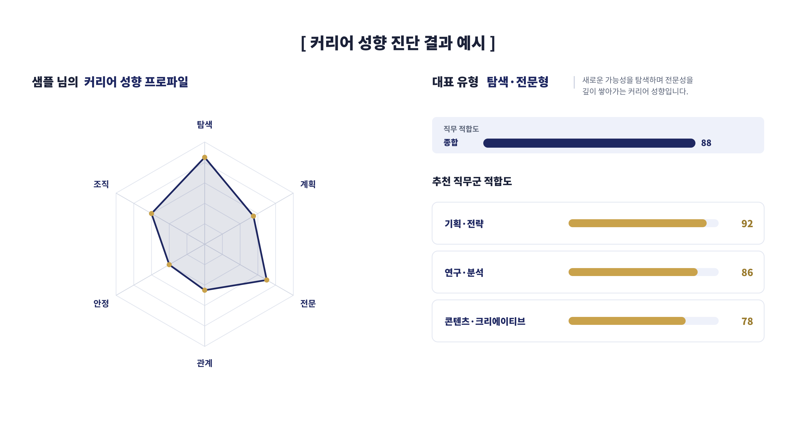

OmniView for You · 커리어 코칭
데이터 기반의 커리어 성향 진단으로, 방향을 잃은 2030이 자신에게 맞는 진로·직무 방향을 입체적으로 찾도록 돕습니다.
커리어·성향 데이터 기반 분석
커리어 성향 요인 및 유형 도출
직업 적합도 매칭 데이터 보유
여러 성향의 조합으로 방향을 설계
6가지 커리어 성향 축
하나의 유형으로 단정하지 않습니다. 여섯 축의 조합으로 직관적 이해가 가능한 성향 프로파일을 만들고, 직무 적합도와 연결합니다.
진단 결과 예시

결과 및 활용
커리어 성향 진단 결과와 12가지 유형을 바탕으로, 나에게 맞는 진로·직무 방향을 제시합니다. 일을 바라보는 관점, 강점, 가치, 적합 직무, 커리어 스타일을 한눈에 확인합니다.
진단 결과를 실제 행동으로 옮기는 개인 맞춤 실행 플랜(이력서·면접·포지셔닝)을 설계합니다. 주간 단위 목표와 코치 피드백으로 결심이 실제 성과로 이어지도록 관리합니다.
코칭 전·중·후의 변화를 데이터로 기록해, 커리어 준비 상태의 성장 추이를 확인합니다. 막힌 지점은 재코칭·재매칭으로 보완하여, 방향 설정부터 실행 정착까지 끊김 없이 이어갑니다.